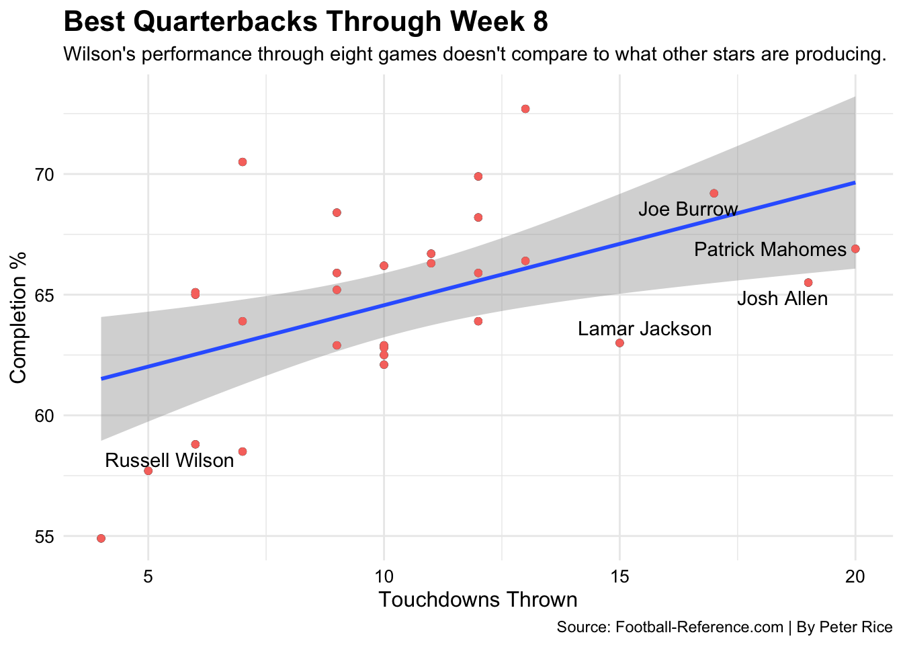

Since Peyton Manning retired in 2016 after winning Super Bowl 50, the Denver Broncos have had a rotating carousel at the starting quarterback position. That was until they completed a blockbuster deal with the Seattle Seahawks this past summer that returned Russell Wilson, who broke Denver fan’s hearts in Super Bowl 48. General Manager George Paton sent away Drew Lock, Noah Fant, Shelby Harris, two first-round picks, and two second-round picks in exchange for Wilson. He will be the 12th different starting Broncos quarterback since “The Sheriff” retired.
However, things have not gone as planned.
Code
library(tidyverse)library(gt)library(ggrepel)library(scales)qbs <-read_csv("QB - Sheet1.csv")qb1 <- qbs %>%filter( G >4, `Cmp%`>43, TD>3)qb2 <- qb1 %>%top_n(4, TD) russ <- qb1 %>%filter(Player =="Russell Wilson")ggplot() +geom_point(data=qb1, aes(x=TD, y=`Cmp%`, color="red")) +geom_point(data=qb1, aes(x=TD, y=`Cmp%`)) +geom_text_repel(data=russ, aes(x=TD, y=`Cmp%`, label=Player))+geom_smooth(data=qb1, aes(x=TD, y=`Cmp%`), method="lm") +geom_point(data=qb1, aes(x=TD, y=`Cmp%`, color="blue"))+geom_text_repel(data=qb2, aes(x=TD, y=`Cmp%`, label=Player))+labs(x ="Touchdowns Thrown", y ="Completion %",title ="Best Quarterbacks Through Week 8",subtitle ="Wilson's performance through eight games don't compare to what other stars are producing.",caption ="Source: Football-Reference.com | By Peter Rice", legend.position ="none") +theme_minimal() +theme(plot.title =element_text(size =16, face ="bold"),axis.title =element_text(size =12),axis.text =element_text(size =10, color ="black") )

Russ and the Broncos stand at 3-5 entering their bye week. The underwhelming start cannot be attributed to the defense, who has allowed the second-fewest points in the NFL this season. The offense, meanwhile, has struggled mightily with their new Signal-Caller. Part of the blame is on first-time head coach Nathaniel Hackett who was brought in for his offensive mindset, but Russell was ready to prove he could lead a new team and hasn’t done so.
Code
qb4 <- qb1 %>%select(Player, TD, Int, `Cmp%`) %>%group_by(Player) %>%summarize( TD, Int,`Cmp%` ) %>%select(Player, TD, Int,`Cmp%` ) %>%arrange(desc(TD))top10 <- qb4 %>%top_n(10, wt= TD)russ2 <- qb4 %>%filter(Player =="Russell Wilson")top10plus <-bind_rows(top10, russ2)top10plus%>%gt()%>%cols_label(Int ="Interceptions",TD ="Touchdowns" ,`Cmp%`="Completion %" ) %>%tab_header(title ="Bottom of the Barrel",subtitle ="Russ isn't putting up big numbers, and also has one of the lowest completion percentages in the NFL." ) %>%tab_style(style =cell_text(color ="black", weight ="bold", align ="left"),locations =cells_title("title") ) %>%tab_style(style =cell_text(color ="black", align ="left"),locations =cells_title("subtitle") ) %>%tab_source_note(source_note =md("**By:** Peter Rice | **Source:** Football-Reference ") ) %>%tab_style(locations =cells_column_labels(columns =everything()),style =list(cell_borders(sides ="bottom", weight =px(3)),cell_text(weight ="bold", size=13) ) ) %>%opt_row_striping() %>%opt_table_lines("none")%>%tab_style(style =list(cell_fill(color ="#002244"),cell_text(color ="#FB4F14") ),locations =cells_body(rows = Player =="Russell Wilson") ) %>%tab_style(style =cell_text(color ="green", weight ="normal"),locations =cells_body(columns =c(`Cmp%`),rows =`Cmp%`>72 ) ) %>%tab_style(style =cell_text(color ="green", weight ="normal"),locations =cells_body(columns =c(Int),rows = Int <3 ) )%>%tab_style(style =cell_text(color ="green", weight ="normal"),locations =cells_body(columns =c(TD),rows = TD >19 ) )
Bottom of the Barrel
Russ isn't putting up big numbers, and also has one of the lowest completion percentages in the NFL.
Player
Touchdowns
Interceptions
Completion %
Patrick Mahomes
20
5
66.9
Josh Allen
19
6
65.5
Joe Burrow
17
6
69.2
Lamar Jackson
15
6
63.0
Aaron Rodgers
13
4
66.4
Geno Smith
13
3
72.7
Jalen Hurts
12
2
68.2
Jared Goff
12
6
63.9
Justin Herbert
12
4
65.9
Tua Tagovailoa
12
3
69.9
Russell Wilson
6
4
58.8
By: Peter Rice | Source: Football-Reference
Transition
Code
mrunl <-read_csv("mrunl - Sheet1.csv")mrunl2 <-read_csv("mrunl2 - Sheet1.csv") ggplot() +geom_line(data=mrunl2, aes(x=Year, y=TD), color="#FB4F14") +geom_point(data=mrunl2, aes(x=Year, y=TD), color="#002244") +labs(x ="Year", y ="Passing Touchdowns",title ="Best Quarterbacks Through Week 8",subtitle ="The best defenses can consistently limit touchdowns ",caption ="Source: Pro-Football-Reference.com | By Peter Rice", legend.position ="none") +theme_minimal() +theme(plot.title =element_text(size =16, face ="bold"),axis.title =element_text(size =12),axis.text =element_text(size =10, color ="black") ) +geom_text(aes(x=2014, y=18, label="Super Bowl Victory"), color="black") +geom_text(aes(x=2020.64, y=12.75, label="Predicted Touchdowns"), color="#002244") +geom_point(aes(x=2022, y=14), color="#002244")